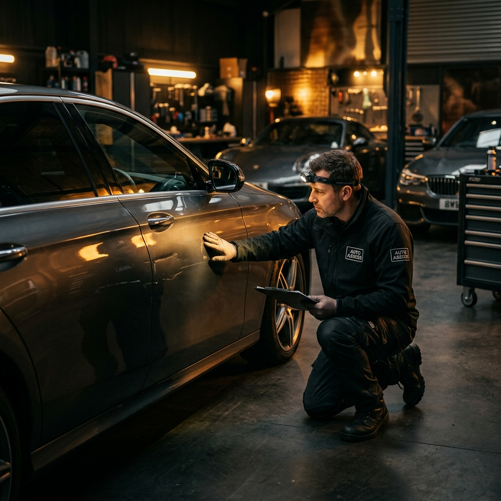

01
Gutachtenerstellung
Unfall- und Schadengutachten für PKW, Wohnmobile, Krafträder, Anhänger, Fahrräder und E-Scooter. Nach § 249 BGB steht Ihnen als unverschuldet Geschädigtem ein eigenes Schadengutachten zu. Wir dokumentieren präzise und begleiten Sie bis zur vollständigen Regulierung.
- Reparaturkosten & Wertminderung
- Gutachten inkl. 3D-Achsvermessung
- Gerichts- & Rechtsanwaltskosten
- Nutzungsausfall & Mietwagen
- Schmerzensgeld & Arztkosten
- Abschlepp- & Entsorgungskosten